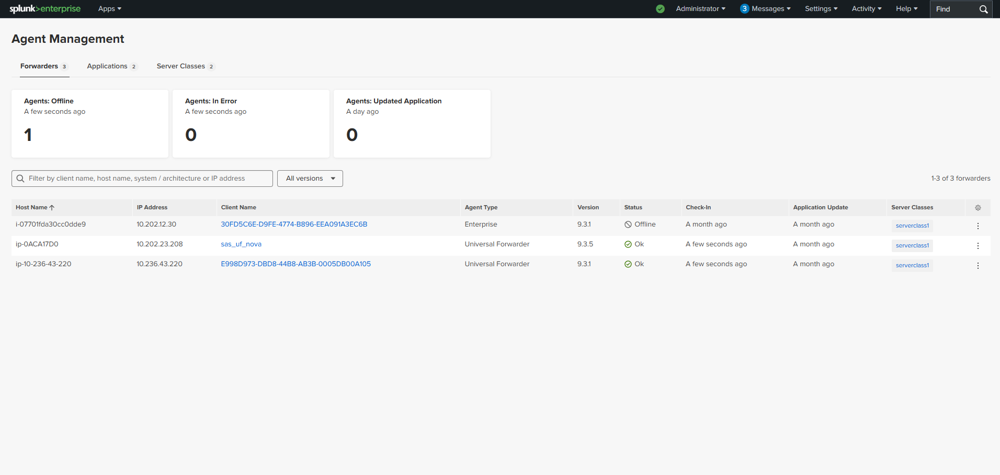
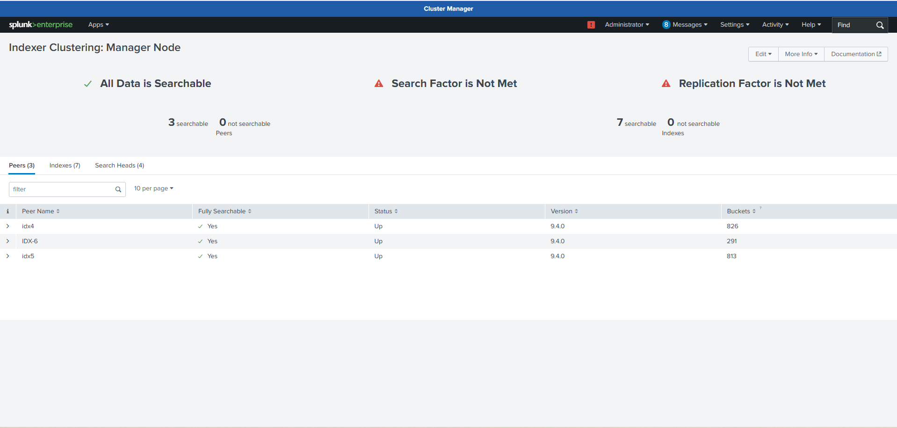
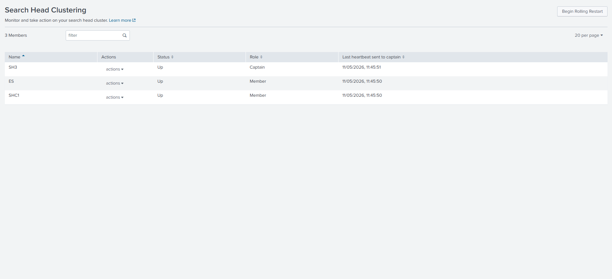
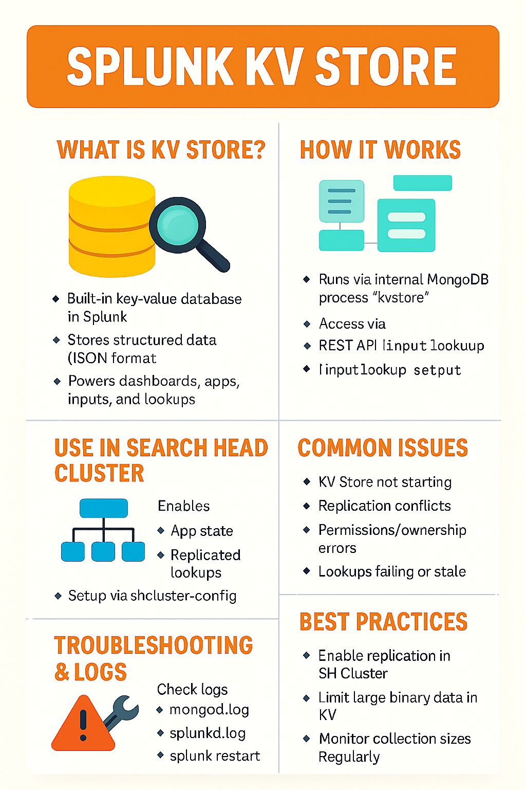
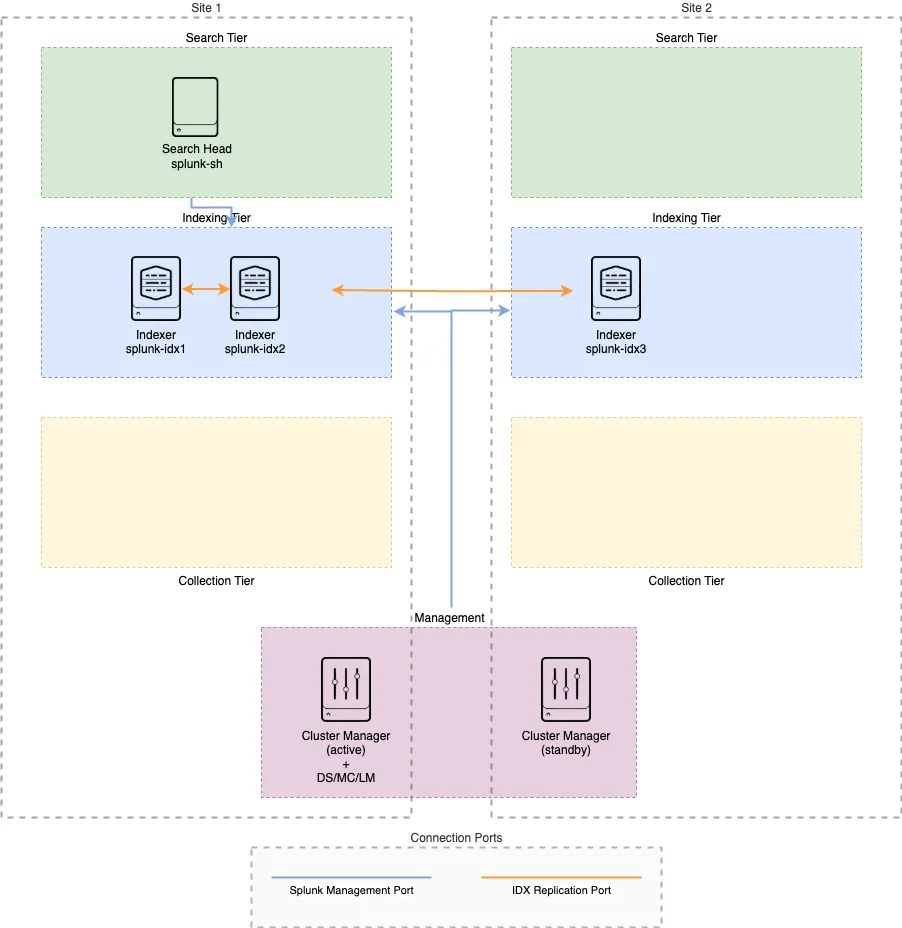

Suresh Jatavath
Splunk Engineer | Troubleshooting | Performance Optimization

Splunk Engineer | Troubleshooting | Performance Optimization
I am a highly skilled Splunk Engineer with over 3 years of experience in Splunk, Linux, Monitoring, log onboarding, scripting, REST API, CSS, and JavaScript. Skilled in creating dashboards, statistical reports, and implementing efficient search strategies. Strong background in Splunk administration, database tuning, system monitoring, and troubleshooting to enhance operational efficiency. Passionate about SIEM, security analytics, and leveraging Splunk for advanced threat detection and incident response.





Architecture, Data Ingestion, SPL, Index Management, Dashboards, Alerts, CLI, REST API
RBAC, LDAP/SAML, Correlation Searches, Incident Analysis
Clustering, Deployment Server, Forwarder Management, Queue Monitoring
Git, GitLab, VS Code, MongoDB